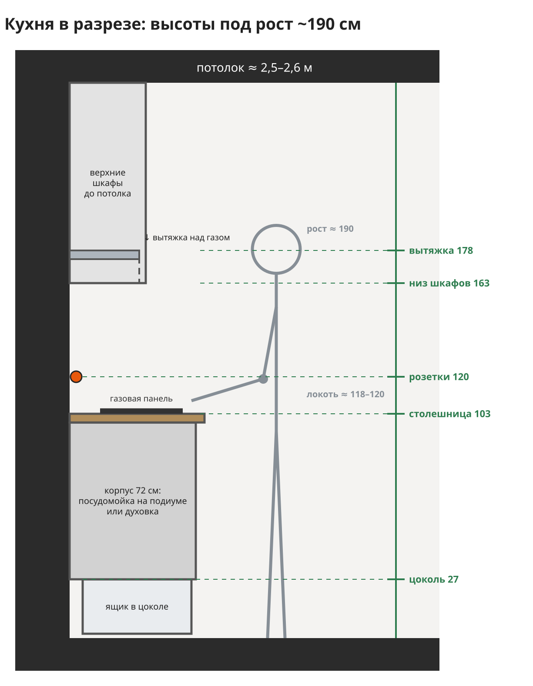
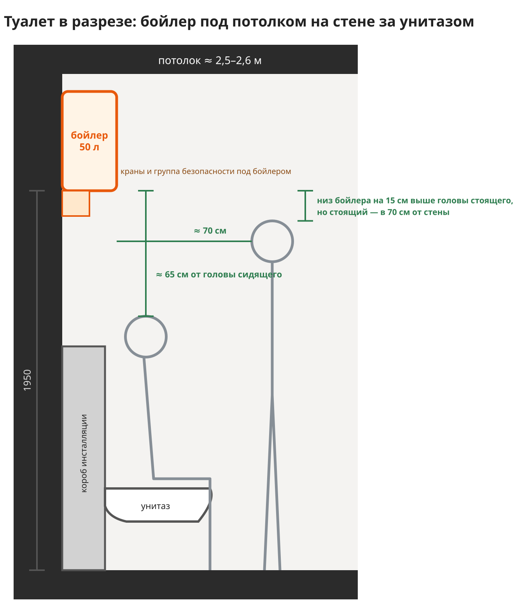

1. Планировка и эргономика
Одна расстановка для всех стилей: стиль меняет цвета и материалы, а не то, где стоит мебель. Задача — удобно ходить и максимально использовать каждый сантиметр.

Эргономика
- Все двери открываются в свободную зону и прижимаются к стене; мебель их не перекрывает. Санузел и спальня 2 — раздвижные двери, туалет — внутрь (унитаз дальше радиуса двери).
- Прихожая полностью свободна: проход 1000 мм; обувь и верхняя одежда — в шкафу холла и на скамье в стороне от пути.
- Основные проходы 860–1320 мм (норма 900+), в спальнях — 690–980 мм (норма второстепенного 600+), зона стула у стола 880–940 мм (норма 900).
- Столы — у глухих стен, окно слева от сидящего: свет не бликует на мониторах и не даёт тени от правой руки.
- Шкафы в спальнях — купе: раздвижным дверям достаточно 600 мм перед фасадом, распашным нужно 750+.
- Всё, что можно, ушло на высоту (пунктир на плане): полки, антресоли, верхние шкафы до потолка — пол остаётся свободным.
Хранение — где и сколько
| Где | Что | Объём |
|---|---|---|
| Гардеробная | П-образная система: штанги + полки + обувь | ≈ 4,7 м |
| Холл | Шкаф 600×2500 до потолка, внизу — обувь | 2,5 м |
| Спальня 1 | Шкаф-купе 600×1700 до потолка | 1,7 м |
| Спальня 2 | Шкаф-купе 600×1690 до потолка + комод 1400 | 1,7 м + комод |
| Кровати | Ящики под матрасом (120×200 и 90×200) | ≈ 1 м³ |
| Над столами | Две полки над каждым столом (1600 и 1800) | 6,8 м полок |
| Кухня | Нижние шкафы 3 м + верхние до потолка в 2 яруса, шкаф над холодильником | ≈ 3 м низ + 2,7 м верх |
| Прихожая | Антресоль над входом на высоте от 2,1 м; на полу — ничего | ≈ 0,6 м³ |
| Санузел | Зеркальный шкаф, ниша в душе, раковина над стиральной машиной | — |
| Туалет | Бойлер 50 л под потолком на стене за унитазом (вместо шкафа) | — |
| Балкон | Шкаф в торце балкона 900×550 | 0,9 м |
| Холл у кухни | Скамья-обувница 350×850 | 0,85 м |
| Итого шкафов для одежды | ≈ 10,6 м | |
1а. Кухня под рост 190 см
Стандартная кухня (столешница 85–90 см) рассчитана на рост 160–175 см. При 190 см за ней приходится всё время наклоняться — поэтому все высоты подняты. Посудомоечная машина есть во всех планировках.

| Что | Высота | Почему |
|---|---|---|
| Столешница (готовка, мойка, газовая панель) | 103 см | на 15 см ниже локтя (у роста 190 локоть ≈ 118–120 см); перед заказом проверить: встать, согнуть руку — столешница на ладонь ниже локтя |
| Цоколь | 27 см | поднимает обычные корпуса 72 см до нужной высоты; в цоколе — выдвижные ящики |
| Посудомоечная машина 45 см | на подиуме 11 см | ниша под столешницей выше машины; подиум закрывает зазор, загружать — меньше наклоняться |
| Газовая панель + духовка | встраиваемые | отдельностоящая плита 85 см была бы на 18 см ниже столешницы |
| Розетки на фартуке | 120 см | ≈ 17 см над столешницей, не ближе 50 см от газовой трубы |
| Низ верхних шкафов | 163 см | 60 см над столешницей — голова не задевает, видно заднюю часть столешницы |
| Верхние шкафы | 163 см → потолок, один ярус | ≈ 85 см высотой (потолок 2,50); верхняя полка — для редко нужного |
| Низ вытяжки над газом | 178 см | 75 см над газовой панелью (точное минимальное расстояние — в паспорте вытяжки); вытяжка встроена в шкаф, глубина ≤ 30 см |
| Холодильник | высокий, ≈ 2 м | основные полки на уровне глаз |
| Стиральная машина (варианты A–C, на кухне) | 60×55×85 на подиуме 14 см | встаёт под столешницу 103 см; подиум закрывает зазор и поднимает люк — меньше наклоняться |
| Стиральная машина в санузле (остальные варианты) | узкая 60×45×85 | под раковиной-кувшинкой 60×60; верх раковины ≈ 98 см — удобно при росте 190 |
- У окна. Подоконник обычно на 85–90 см — столешница 103 см перекроет низ створки. Барную стойку у окна в основной планировке делаем на уровне подоконника (для еды с полубарными стульями); если у окна рабочая поверхность (вариант D) — нужна створка, которая открывается выше столешницы, или столешница у окна на уровне подоконника.
- Если готовит кто-то ниже ростом — компромисс 95–98 см или выдвижная доска на 85–90 см в одном из шкафов.
- Заодно под рост 190: раковина в санузле на 95 см, подвесной унитаз на 46–48 см, лейка душа на штанге до 2,1 м, рабочие столы 78–80 см или регулируемые по высоте.
1б. Другие планировки
Варианты, которые отходят от исходной задачи «две спальни-кабинета»: гостиная, кабинет, гардеробная при спальне, ванна вместо душа. Кухня во всех вариантах остаётся на месте — переносить мокрые зоны над жилыми комнатами соседей нельзя.
A. Спальня + гостиная, ванна 150
Для пары; работа из дома — иногда. Без перепланировки.

- Спальня: кровать 160×200, по 1 м свободно с каждой стороны, ТВ на стене; одежда — в гардеробной.
- Спальня 2 → гостиная: диван-кровать 2,2 м для гостей, ТВ, рабочий угол у окна (стол 1200×600).
- Санузел: ванна 150×70 вместо душа; стиральная машина переезжает на кухню, посудомойка остаётся под мойкой.
Плюсы: Ничего не нужно согласовывать; появляется настоящая гостиная.
Минусы: Одно полноценное рабочее место; стиральная машина на кухне; в ванной проход 620 мм.

B. Открытая гостиная + кабинет вместо гардеробной, ванна 150
Для одного-двух человек, кто работает за ПК и любит гостей. Снос перегородки спальня 2 / холл + объединение ванной и туалета — нужно согласование.

- Перегородка между спальней 2 и холлом убрана: гостиная-столовая ≈ 17 м² вместе с холлом, стол на 4 у окна.
- Гардеробная → кабинет-«капсула» без окна: стол 1920×700, полки; дверь открывается в холл.
- Спальня: кровать 140×200 + шкаф-купе 1,9 м.
- Совмещённый санузел: ванна 150×70 вдоль стены, унитаз перед стояком, змейка на месте, стиральная машина — на кухню; одна дверь.
Плюсы: Холл получает дневной свет из окна гостиной; полноценный обеденный стол; кабинет изолирован от спальни.
Минусы: Кабинет без окна — нужен приток воздуха и яркий ровный свет; прихожая открыта в гостиную; стену нужно проверить — она не должна быть несущей.


C. Спальня с гардеробной + кабинет, ванна 150
Своя спальня с гардеробной и отдельный кабинет. Новый проём спальня → гардеробная + объединение ванной и туалета — нужно согласование.

- Вход в гардеробную — из спальни (новый проём), дверь из холла закладывается; на освободившейся стене холла — ещё один шкаф.
- Спальня: кровать 160×200, ТВ на стене.
- Спальня 2 — кабинет или гостевая: стол 1800×700, шкаф-купе 1,7 м, кровать 90×200.
- Совмещённый санузел с ванной 150×70; стиральная машина — на кухню.
Плюсы: Спальня с собственной гардеробной; ванна; хранение в холле буквой Г.
Минусы: Утром один санузел на всех; две перепланировки.

D. Кухня только рабочая, столовая в холле
Для тех, кто много готовит и хочет нормальный обеденный стол. Без перепланировки.

- Кухня П-образная: рабочая поверхность у окна + газовая плита + мойка с посудомойкой 45 см — 4,2 м столешницы вместо 3 м; ни барной стойки, ни стола.
- Между рядами кухни 900 мм — удобно одному, вдвоём можно разойтись.
- Обеденный стол 1400×800 на 4 — в тупиковой части холла, куда ходят только в спальню 1 и гардеробную; над столом — низкий подвесной светильник.
- Шкаф холла переезжает ниже (1 м) + обувница; спальни — исходные спальни-кабинеты.
Плюсы: Кухня становится полноценной рабочей; обеденный стол на 4 без сноса стен; холл используется, а не просто проходной.
Минусы: Хранения в холле меньше на 1,5 м; столовая без окна — нужен хороший тёплый свет и матовое стекло в двери спальни 2; проход у стола 700 мм.


E. Спальня + рабочая комната
Сон и работа разведены по разным комнатам. Без перепланировки.


- Спальня (10,5 м², с балконом) — только для сна: кровать 160×200 с проходами по 1 м или две кровати 90×200 вдоль длинных стен с проходом 1,14 м. Одежда — в гардеробной и шкафу холла.
- Рабочая комната (8,9 м²) — только для работы: один большой стол для ПК 2000×800 вдоль глухой стены от окна (свет слева), рядом книжный шкаф.
- У противоположной стены — диван-кровать 2 м для гостя; зона стула 900 мм, от двери к столу проход 1180 мм, в углу тумба под МФУ.
- Кухня, санузел, холл — как в основной планировке.
Плюсы: В спальне нет монитора и рабочего света — лучше спится; есть спальное место для гостя; ничего не нужно согласовывать.
Минусы: Одно рабочее место на квартиру; в разложенном виде диван перекрывает проход к столу — только когда гость остаётся ночевать.


Санузел: душ или ванна


| Душ (текущий) | Ванна 150, раздельный | Ванна 150, совмещённый | |
|---|---|---|---|
| Ванна / душ | душ 800×920 с трапом | ванна 150×70 | ванна 150×70 |
| Стиральная машина | узкая 60×45×85 под раковиной 60×60 | на кухне, 60×55×85 на подиуме 14 см | на кухне, 60×55×85 на подиуме 14 см |
| Свободное место | 720×620 + полоса 520 у змейки | проход 620 мм | 1215×740 мм |
| Туалет | отдельно | отдельно | в том же помещении |
| Стояк и змейка | на месте | на месте | на месте |
| Согласование | не нужно (трапу нужен подъём пола ~10 см и гидроизоляция) | не нужно | нужно — объединение санузлов |
| Плюсы | стиралка в санузле, легко убирать | ванна без перепланировки | ванна и просторно |
| Минусы | нет ванны | тесно, стиралка на кухне | утром одна дверь на всех; стиралка на кухне |
1в. Тёплый пол — комфортный
Не основное отопление, а «чтобы босиком было приятно»: в санузлах, прихожей, на кухне и в холле. Две схемы — для основной планировки и для варианта D.


Зоны и мощность
| Зона | Приоритет | Основная | Вариант D |
|---|---|---|---|
| Санузел (душ + пол у раковины) | в первую очередь | 1,6 м² · 240 Вт | 1,6 м² · 240 Вт |
| Туалет | в первую очередь | 1,1 м² · 160 Вт | 1,1 м² · 160 Вт |
| Прихожая | в первую очередь | 1,5 м² · 230 Вт | 1,5 м² · 230 Вт |
| Кухня (у столешниц) | рекомендуется | 2,3 м² · 340 Вт | 2,1 м² · 310 Вт |
| Холл и коридор | рекомендуется | 7,9 м² · 1190 Вт | 3,6 м² · 540 Вт |
| Спальня 1 (у стола и кровати) | по желанию | 2,2 м² · 340 Вт | 2,2 м² · 340 Вт |
| Спальня 2 (у стола и кровати) | по желанию | 3,3 м² · 500 Вт | 3,3 м² · 500 Вт |
| Столовая в холле | рекомендуется | — | 4,4 м² · 660 Вт |
Сколько стоит в работе (основная планировка)
| Набор зон | Мощность | В месяц отопительного сезона | При 8 ₽/кВт·ч |
|---|---|---|---|
| в первую очередь | 630 Вт | ≈ 70 кВт·ч | ≈ 560 ₽ |
| рекомендуется | 1530 Вт | ≈ 170 кВт·ч | ≈ 1360 ₽ |
| по желанию | 840 Вт | ≈ 90 кВт·ч | ≈ 720 ₽ |
Оценка: терморегулятор держит комфортный режим ~12 ч в сутки и включает нагрев примерно на треть этого времени. Реальный расход зависит от расписания и температуры; тариф подставьте свой.
Правила
- Комфортный, не основной. Радиаторы остаются и греют квартиру; пол только убирает ощущение холодной плитки. Температура поверхности — до 26 °C в комнатах и холле, до 31 °C в санузлах (СП 60.13330); ламинат и кварцвинил обычно до 27 °C — смотреть паспорт покрытия.
- Только электрический. Водяной тёплый пол от центрального отопления в многоквартирном доме подключать нельзя.
- Тип — по покрытию. Плитка и керамогранит: тонкий нагревательный мат прямо в плиточный клей (+3–5 мм, без стяжки). Ламинат, кварцвинил, инженерная доска: плёночный или тонкий кабельный пол, разрешённый производителем покрытия.
- Не под мебелью. Не укладывать под шкафы, кухню, ванну, инсталляцию, холодильник, кровать без ножек — перегрев и потерянные деньги. На схемах зоны уже обрезаны по мебели.
- Свой терморегулятор на зону с датчиком пола и расписанием: санузел — утром и вечером, кухня и холл — в отопительный сезон; летом — только санузел или выключено.
- Электрика. Отдельная линия с УЗО 30 мА (в санузле — 10 мА), заземление; в санузле — мат с экранирующей оплёткой.
- Выделенная мощность. В домах с газовой плитой на квартиру часто дают 3–4 кВт. Все зоны вместе ≈ 3 кВт — включать всё сразу нельзя. Первый набор (санузлы + прихожая, 0,6 кВт) безопасен; кухню и холл (+1,5 кВт) — после проверки мощности или с реле приоритета.
1г. Сантехника и электрика
Схемы для основной планировки: куда подвести воду и канализацию, где розетки, свет и выключатели, как разбить щиток на группы. Номера на схемах — строки в таблицах.
Сантехника




Реальные фото таких туалетов: бойлер над унитазом · бойлер в шкафу над унитазом · водонагреватель в маленьком туалете · ещё подборка
| № | Где | Что подвести |
|---|---|---|
| 1 | Кухня — мойка | Х + Г, канализация 50 |
| 2 | Кухня — посудомоечная машина 45 см (под столешницей рядом с мойкой) | кран Х; слив через сифон мойки |
| 3 | Санузел — раковина «кувшинка» над стиралкой | Х + Г, канализация 50 |
| 4 | Санузел — стиральная машина узкая 60×45×85 см (Ш×Г×В) под раковиной-кувшинкой 60×60, верх раковины ≈ 98 см | кран Х; слив через сифон раковины; ниша 60 см |
| 5 | Санузел — душ | смеситель на восточной стене Х + Г; трап 50; пол санузла +100 мм |
| 6 | Санузел — змейка (полотенцесушитель) на стояке горячей воды | остаётся на месте; переносить только с управляющей компанией |
| 7 | Туалет — унитаз на инсталляции у восточной стены, перед стояком | Х, канализация 110 |
| 8 | Туалет — узел ввода за инсталляцией (с люком) | краны, фильтры, счётчики Х/Г, редукторы, коллекторы, электрокраны защиты от протечек |
| 9 | Туалет — бойлер 50 л горизонтально под потолком на стене за унитазом (низ на 1,90 м, верх 2,40 м) | вход Х через группу безопасности (слив в канализацию), выход в коллектор Г |
- Стояки — за унитазом у восточной стены туалета (по словам владельца); узел ввода — там же, за инсталляцией, с люком. Стояки и краны на них — общедомовое имущество, менять только через управляющую компанию.
- Змейка (полотенцесушитель) висит на стояке горячей воды на восточной стене санузла — санузел спланирован вокруг неё: душ слева, у змейки свободная полоса 520 мм. Переносить её можно только с управляющей компанией.
- Разводка коллекторная: каждая точка — своей трубой от коллектора, сшитый полиэтилен (PEX) в гофре, в полу и стенах без соединений.
- Канализация 50 мм, у стояка 110 мм, уклон 2–3 см на метр; у каждой точки сифон, у стояка — ревизия (лючок).
- Душ с трапом: пол санузла поднимается примерно на 100 мм под уклон трубы; гидроизоляция пола и стен в зоне душа на высоту 2 м.
- Защита от протечек: 4 датчика (под мойкой, у стиралки, в санузле, в туалете) и электрокраны на вводе — перекрывают воду за секунды.
- Бойлер 50 л — плоский, повешен горизонтально под потолком на стене за унитазом: низ на 1,90 м, верх на 2,40 м — под потолком 2,50 м остаётся 10 см, хватит и с натяжным потолком. Сидящему до бойлера ~60 см над головой, стоящий — в 70 см от стены (см. разрез). Летом при отключении горячей воды: 1) закрыть кран горячей воды на вводе (иначе нагретая вода уйдёт в общий стояк), 2) открыть краны бойлера, 3) включить бойлер. Осенью — наоборот. Обязательна группа безопасности со сливом в канализацию.
Электрика

- Проводку менять полностью на медную ВВГнг(А)-LS — в домах этого возраста часто старая алюминиевая.
- Ввод: вводной автомат по выделенной мощности (смотреть договор с энергосбытом), реле напряжения, противопожарное УЗО 100 мА, щит на 36 модулей с запасом.
- Плита газовая. Силовая линия под варочную панель не нужна, только розетка для электроподжига. Розетки и выключатели — не ближе 50 см от газовой трубы (точное место трубы уточнить). Кухне с газом нужна дверь — она есть на плане.
- Бойлер — своя линия (гр. 8). Летом тёплый пол выключен, поэтому мощности хватает; не включать одновременно бойлер, стиральную машину и чайник, если выделено всего 3–4 кВт.
- Санузел: розетки только IP44, не ближе 60 см от душа, защита 10 мА; выключатели — снаружи, у двери.
- Высоты: выключатели 900 мм со стороны ручки двери; обычные розетки 300; над столами 900; кухонный фартук 1200 (столешница 103 см); у изголовья 600; стиральная машина 1000.
- Интернет: кабель Cat6 от роутера в холле к каждому столу — в полу, в отдельной гофре вдоль стен, через пороги дверей, с протяжкой и запасом 0,5 м у розетки. Не по потолку: от потолка до розетки над столом нужен спуск 1,6 м, а несущие стены панельного дома штробить нельзя. Под натяжной потолок идут только линии освещения. Если пол не вскрывают — кабель-канал в плинтусе.
- Силовые линии к розеткам — тоже в полу или по перегородкам; интернет-кабель — минимум в 10 см от силовых или в отдельной гофре, чтобы не ловить помехи.
- Ориентация. По чертежу окна смотрят на юг, восток — стена с санузлами и входом. Если это не так — напишите.
- Отопление. Стояки в юго-западных углах комнат, батареи под окнами — не переносятся; мебель стоит не ближе 10–15 см и не закрывает батареи (кровать в спальне 1 отодвинута от окна). Столешница или барная стойка над кухонной батареей — с вентиляционной решёткой и зазором над батареей.
- Это техзадание, а не проект. Проект и монтаж делает электрик с допуском по ПУЭ и СП 256.1325800; схема помогает договориться, где что должно быть.
| № | Где | Что | Высота, мм | Группа |
|---|---|---|---|---|
| 1 | Спальня 1 — над столом | 4 розетки + LAN | 900 | 3 |
| 2 | Спальня 1 — у изголовья | 2 розетки + USB | 600 | 3 |
| 3 | Спальня 1 — у двери | 1 розетка (пылесос) | 300 | 3 |
| 4 | Спальня 1 — у балкона | 1 розетка | 300 | 3 |
| 5 | Спальня 2 — над столом | 4 розетки + LAN | 900 | 4 |
| 6 | Спальня 2 — у изголовья | 2 розетки + USB | 600 | 4 |
| 7 | Спальня 2 — у комода | 1 розетка | 300 | 4 |
| 8 | Кухня — холодильник | 1 розетка сбоку от холодильника | 300 | 5 |
| 9 | Кухня — у барной стойки | 2 розетки (чайник, зарядка) | 1000 | 5 |
| 10 | Кухня — фартук | 2 розетки, ≥ 50 см от газовой трубы | 1200 | 5 |
| 11 | Кухня — фартук у угла | 2 розетки | 1200 | 5 |
| 12 | Кухня — вытяжка над газовой панелью | 1 розетка в верхнем шкафу | 2300 | 5 |
| 13 | Кухня — посудомоечная машина | 1 розетка в угловом шкафу (над высоким цоколем) | 500 | 6 |
| 14 | Кухня — газовая панель и духовка | 1 розетка для электроподжига и подсветки духовки, ≥ 50 см от газовой трубы | 500 | 5 |
| 15 | Туалет — бойлер 50 л | 1 розетка IP44 у бойлера | 1800 | 8 |
| 16 | Санузел — стиральная машина 60×45×85 | 1 розетка IP44 с крышкой, сбоку от машины | 1000 | 7 |
| 17 | Санузел — у зеркала | 1 розетка IP44 (фен, бритва) | 1100 | 9 |
| 18 | Холл — у шкафа | 2 розетки (пылесос, зарядки) | 300 | 12 |
| 19 | Холл — слаботочный щит | 1 розетка для роутера | внутри щита | 12 |
| Т1 | Тёплый пол: санузел + туалет — на стене h 900, с датчиком пола | |||
| Т2 | Тёплый пол: прихожая — на стене h 900, с датчиком пола | |||
| Т3 | Тёплый пол: кухня + холл (если делать) — на стене h 900, с датчиком пола | |||
Щиток — группы
| Гр. | Что питает | Защита | Кабель, мм² |
|---|---|---|---|
| 1 | Свет: спальни, гардеробная, балкон | автомат B10 | 3×1,5 |
| 2 | Свет: холл, прихожая, кухня, санузлы | автомат B10 | 3×1,5 |
| 3 | Розетки спальни 1 (точки 1–4) | дифавтомат C16, 30 мА | 3×2,5 |
| 4 | Розетки спальни 2 (5–7) | дифавтомат C16, 30 мА | 3×2,5 |
| 5 | Кухня: фартук, холодильник, вытяжка, поджиг плиты (8–12, 14) | дифавтомат C16, 30 мА | 3×2,5 |
| 6 | Посудомоечная машина (13) | дифавтомат C16, 30 мА | 3×2,5 |
| 7 | Стиральная машина (16) | дифавтомат C16, 10 мА | 3×2,5 |
| 8 | Бойлер 50 л (15) | дифавтомат C16, 30 мА | 3×2,5 |
| 9 | Санузел: розетка у зеркала, подсветка зеркала (17) | дифавтомат C10, 10 мА | 3×1,5 |
| 10 | Тёплый пол санузел + туалет (Т1) | дифавтомат C10, 10 мА | 3×1,5 |
| 11 | Тёплый пол прихожая, кухня, холл (Т2, Т3) | дифавтомат C16, 30 мА | 3×2,5 |
| 12 | Холл: розетки, роутер (18–19) | дифавтомат C16, 30 мА | 3×2,5 |
2. Цветовые решения
8 палитр — от светлых до тёмных. У каждого цвета своя роль и место. Коды NCS — ориентир для подбора краски в магазине.
- 60 / 30 / 10. 60% — основной цвет (стены), 30% — второй (мебель, фасады, пол), 10% — акцент (текстиль, декор, одна стена).
- Маленькая площадь. Один основной цвет на всю квартиру и сквозной пол без порогов — квартира читается как единое пространство и кажется больше.
- Холл без окна. В светлых стилях — светлые матовые стены и много света; в тёмных — темнота допустима, но потолок светлее и обязательно 2–3 сценария света.
- Тёмные стили при потолке 2,5 м. Потолок светлее стен (кроме тёмного минимализма, где его красят в цвет стен намеренно); хорошая подсветка — обязательна.
- Проверка краски. Цвета на экране приблизительные, коды NCS — ориентир. Пробник 50×50 см на стене, смотреть утром, днём и вечером при своих лампах (CRI ≥ 90): один и тот же цвет при тёплом и дневном свете выглядит по-разному.
Japandiсветлый
S 0502-Y
S 2005-Y20R
S 3020-Y60R
S 1005-Y20R
Mid-century modernтёплый
S 1005-Y20R
S 3040-Y70R
S 4020-G90Y
S 2060-Y20R
Светлый минимализмсветлый
S 0500-N
S 1500-N
S 7502-B
S 5040-R90B
Ретро-поездтёмный
S 7020-G10Y
S 5040-R
S 1010-Y20R
Тёмный минимализмтёмный
S 7502-Y
S 8000-N
S 4050-Y70R
Киберпанктёмный
S 9000-N
S 8005-R80B
Ар-деконасыщенный
S 6030-B90G
S 7020-R80B
Средиземноморьесветлый
S 0804-Y30R
S 3040-Y60R
S 4055-R80B
S 3010-G50Y
3. Отделка и декор
Чем отделать каждую поверхность, какой свет и какие предметы создают стиль. Нажмите на стиль, чтобы раскрыть.
Japandiсветлый
Тишина и тепло: светлое дерево, натуральные ткани, минимум предметов.
| Пол | Инженерная доска или кварцвинил «дуб натуральный», ёлочка, единый по всей квартире; санузлы — керамогранит под микроцемент 60×120. |
| Стены | Матовая моющаяся краска; акцентная стена в спальнях — декоративная штукатурка «глина»; дубовые рейки у изголовья. |
| Потолок | Окраска, матовый белый; теневой профиль вместо плинтуса; без многоуровневых конструкций. |
| Двери | Скрытого монтажа под покраску в цвет стен; спальня 2 — раздвижная «сёдзи»: дуб + матовое стекло. |
| Кухня | Низ — шпон/ЛДСП дуб, верх — матовая эмаль; столешница светлый кварц; фартук — керамика ручной формовки. |
| Санузел | Микроцемент или керамогранит тёпло-серый; подвесная тумба дуб; смесители чёрные матовые; круглое зеркало с подсветкой. |
| Свет | Подвесы из рисовой бумаги (общий, 2700–3000K); трек в холле; подсветка цоколя шкафов; настольные лампы 4000K на столах. |
| Текстиль | Лён, хлопок, шерсть; шторы натуральный лён; ковры джут/шерсть. |
| Декор | Керамика, ветки в вазах, графика тушью, 2–3 крупных растения. Правило: меньше, но лучше. |
Mid-century modernтёплый
Орех, тёплые цвета середины века, мебель на тонких ножках, игривые детали.
| Пол | Паркет или кварцвинил «орех», ёлочка; у входа и в санузлах — керамогранит под терраццо. |
| Стены | Молочная матовая краска; терракотовая акцентная стена; арочный портал в кухню. |
| Потолок | Окраска, белый; без молдингов. |
| Двери | Шпон ореха, латунные ручки-кнопки. |
| Кухня | Оливковые фасады с латунными ручками, верх молочный; столешница дерево под маслом или кварц; фартук — глазурованная плитка «кабанчик» зелёная. |
| Санузел | Пол — терраццо; в душе — оливковый зеллиж; тумба орех; латунная сантехника; арочное зеркало. |
| Свет | Шары из опалового стекла, бра на шарнирах, торшер в духе 50-х; 2700K, рабочий свет на столах 4000K. |
| Текстиль | Бархат и букле горчица/олива, геометрические ковры. |
| Декор | Постеры и графика середины века, керамика, монстера и пилея, настенные часы-«солнце». |
Светлый минимализмсветлый
Максимум света и воздуха: белый, графит и один акцентный цвет.
| Пол | Керамогранит «светлый камень» 60×120 по всей квартире (или светлый кварцвинил в спальнях). |
| Стены | Белая матовая краска; панель графит за изголовьем; зеркальная панель в холле. |
| Потолок | Окраска + встроенные световые линии (или натяжной матовый со световыми линиями). |
| Двери | Скрытые под покраску; спальня 2 — раздвижная в чёрном алюминии с рифлёным стеклом. |
| Кухня | Белые фасады без ручек (профиль Gola), сатин; столешница графит (кварц/керамика), фартук в тон. |
| Санузел | Керамогранит-слэбы светлый камень, ниша графит; подвесная белая тумба; чёрная матовая сантехника; линейный трап. |
| Свет | Линейные встроенные светильники 3000–4000K, подсветка-карниз, тонкие подвесы; CRI ≥ 90. |
| Текстиль | Белый тюль; синие шторы-блэкаут в спальнях; серые ковры с коротким ворсом. |
| Декор | 1–2 крупные фотографии или графика, стекло, белые цветы. Открытых полок — минимум. |
Ретро-поездтёмный
Спальный вагон: тёмное дерево, латунь, бордо и бутылочно-зелёный; гардеробная превращается в настоящее купе поезда.
| Пол | Паркет «тёмный орех», ёлочка; в холле — ковровая дорожка красная с зелёной каймой; санузел — шестигранник ч/б. |
| Стены | Буазери: панели МДФ в шпоне ореха до 1,2 м, выше — краска бутылочно-зелёная; в «Купе» — панели под дерево полностью. |
| Потолок | Светлый кремовый — тёмным стенам нужен светлый потолок, иначе при потолке 2,5 м будет давить. |
| Двери | Шпон ореха, латунь; «Купе» — раздвижная купейная дверь с зеркалом. |
| Кухня | Тёмно-зелёные филёнчатые фасады, латунные рейлинги и ручки, столешница орех; фартук — зелёная плитка. |
| Санузел | Тёмно-зелёная глянцевая плитка, тумба орех, латунная сантехника, круглое зеркало в латуни. |
| Свет | Бра с молочными плафонами, «банкирская» зелёная лампа на столе, 2400–2700K. В «Купе» — бра над полками и экран-«окно» (ТВ в раме с закруглёнными углами и рулонной шторой). |
| Текстиль | Бордовая кожа/кожзам на полках купе, бархат, шерстяные пледы в клетку, плотные шторы. |
| Декор | Подстаканники, багажные полки с латунными рейлингами, сетки для вещей, старые карты железных дорог, фотографии поездов. |
Тёмный минимализмтёмный
Глубокие графитовые стены, копчёный дуб, травертин и тёплый скрытый свет — уютно и камерно.
| Пол | Инженерная доска «копчёный дуб»; санузлы — тёмный микроцемент или керамогранит. |
| Стены | Глубокая матовая краска графит (моющаяся, с высокой укрывистостью); травертин акцентами. |
| Потолок | В цвет стен или на тон светлее — граница стена/потолок «растворяется»; скрытый карниз с подсветкой. |
| Двери | Скрытые, окрашены в цвет стен; раздвижная — тонированное стекло. |
| Кухня | Чёрные матовые фасады с покрытием анти-отпечатки, столешница тёмный камень, барная стойка из копчёного дуба. |
| Санузел | Тёмный микроцемент, травертиновая столешница, чёрная сантехника, зеркало с подсветкой. |
| Свет | Только тёплый 2700K: скрытые линии, wall-washer, точечные акценты. На столах обязательно рабочий свет 4000K — в тёмной комнате глаза устают быстрее. |
| Текстиль | Лён графит и табак, шерсть, ржавые акценты. |
| Декор | Травертин, керамика ручной работы, сухоцветы, одна крупная абстрактная картина. |
Киберпанктёмный
Чёрная база, неоновая подсветка, акустика — под игры, стримы и работу за ПК.
| Пол | Тёмный кварцвинил «бетон» или «дуб графит». |
| Стены | Чёрная матовая краска; акустические панели (войлок, гексагоны) за мониторами — заодно глушат звук между комнатами. |
| Потолок | Чёрный или тёмно-серый, LED-профили. |
| Двери | Чёрные; раздвижная — тонированное стекло. |
| Кухня | Чёрные фасады, столешница под бетон, LED-лента под верхними шкафами. |
| Санузел | Чёрная шестигранная плитка, чёрная сантехника, ниша с RGB-подсветкой. |
| Свет | Умные RGB-ленты (Wi-Fi), но основной белый свет обязателен: 3000–4000K, CRI ≥ 90 — один неон для глаз вреден. |
| Текстиль | Шторы-блэкаут, тёмные пледы. |
| Декор | Постеры, фигурки на полках, неоновая вывеска, растения под фитолампой. |
Ар-деконасыщенный
Изумруд, тёмно-синий, золото, бархат и мрамор — роскошь 1920-х в современной подаче.
| Пол | Паркет орех ёлочкой; в холле и санузлах — керамогранит/мрамор ч/б с геометрией. |
| Стены | Краска изумруд/тёмно-синий; обои с веерным геометрическим узором на акцентной стене; рифлёные панели. |
| Потолок | Белый или кремовый, тонкий карниз. |
| Двери | Филёнчатые тёмно-синие с латунью; вставки из рифлёного стекла. |
| Кухня | Изумрудные фасады, золотые ручки, мраморная (или кварц под мрамор) столешница и фартук. |
| Санузел | Изумрудная глянцевая плитка, ч/б мрамор на полу, золотая сантехника, арочное зеркало в латуни. |
| Свет | Веерные бра, люстры с ребристым стеклом, латунь; 2700K. |
| Текстиль | Бархат изумруд/горчица/синий, ковры с геометрическим орнаментом. |
| Декор | Зеркала в латунных рамах, вазы, графика 20-х, гортензии и розы. |
Средиземноморьесветлый
Солнечный юг: белая штукатурка, терракота, кобальт, ротанг и арочные ниши.
| Пол | Керамогранит под терракоту в холле, кухне, санузлах; в спальнях — светлый дуб. |
| Стены | Декоративная известковая штукатурка белая; арочные ниши в холле и спальнях. |
| Потолок | Белая штукатурка; балки не делать — при потолке 2,5 м съедят высоту. |
| Двери | Деревянные: натуральные или крашенные в кобальт; вставки из ротанга. |
| Кухня | Шалфейные фасады, фартук — плитка с синим орнаментом, столешница олива/дерево. |
| Санузел | Белый зеллиж, синяя плитка с орнаментом на полу, тумба олива, арочное зеркало. |
| Свет | Плетёные абажуры из ротанга, керамические бра; 2700–3000K. |
| Текстиль | Лён, сине-белая полоска, джутовые ковры. |
| Декор | Синяя керамика, кувшины, оливковые ветки, плетёные корзины. |
4. Визуализации
ИИ-картинки (gpt-image-2.6) показывают настроение, цвет и материалы, но не точную геометрию — расстановка мебели определяется планом из раздела 1.
Japandiсветлый


Mid-century modernтёплый


Светлый минимализмсветлый


Ретро-поездтёмный


Тёмный минимализмтёмный


Киберпанктёмный


Ар-деконасыщенный


Средиземноморьесветлый